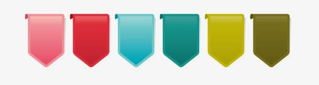

组件开发规范
简述

?> 大致描述组件名称，作用
引用关联页面(组件)
- 首页 src/view/home
- 产品页面 src/view/prodict
?> 通过页面列举引用组件，在后期维护修改时可以很快定位到其他页面的功能是否会受到影响
组件项目结构
| +-- index.js //组件入口
| +-- index.less //样式
| +-- navbar.js //弹框内表单信息操作
| +-- navbar.less//样式
| +-- readme.md// 组件描述文档
| +-- util.js // 一些组件用函数封装📦
?> 列举页面文件目录，可以很清晰的明白各个文件所承担的角色，方便后期或其他小伙伴查找
实现方式
- index.js 主要是入口文件，导航的接口对接，对外交互，
- navbar.js 导航条实现的主要信息，根据不同的导航信息需要匹配对应的背景色
- util.js 通过枚举的方式封装了导航背景色函数
?> 记录实现思路以及对当时业务场景的细节记录 方便后期查看修改
用法
import Nav from 'src/component/nav/index.js';
<Nav
navlist={navList} //导航列表
active={home} // 当前选择状态
onhandelChange={this.onhandelChange} //导航发生改变会调函数
/>;
?> 方便后期引用
对外依赖
- 静态资源 src/assets/less.less
- 静态资源 src/assets/common.js
?> 列举页面外部依赖，方便组件的对外项目的复用